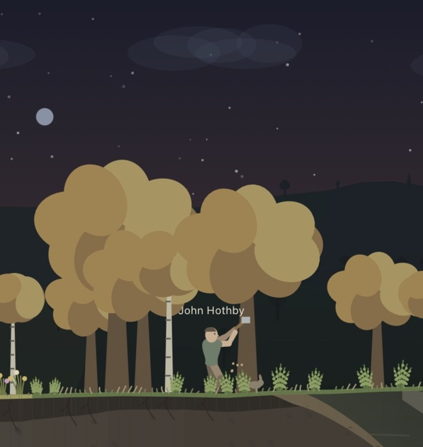

A persistent multiplayer sandbox
Archē
A shared world for wandering, making things, and seeing what happens.
Play on mobile or desktop. The game is coded entirely by AI and develops continuously through play, screenshots, and conversation.
Enter the world
Latest from the journal · 26 November 2026
The tree that tried to drown
A tree fell into a pool and found one last hill to lie on. From the bank, the game had a suggestion.
Read the field note